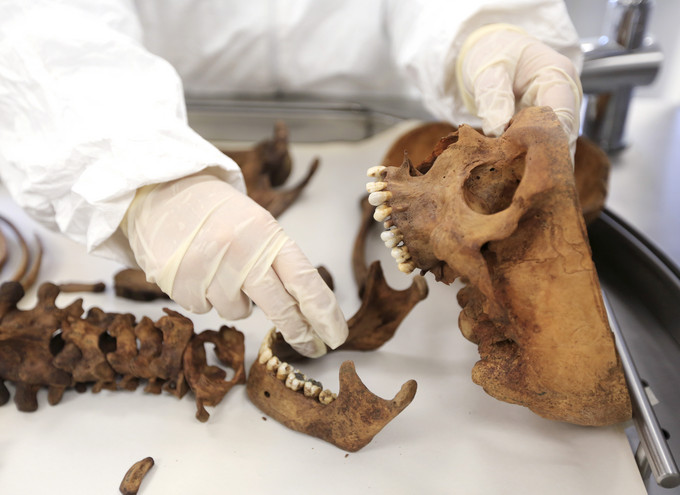
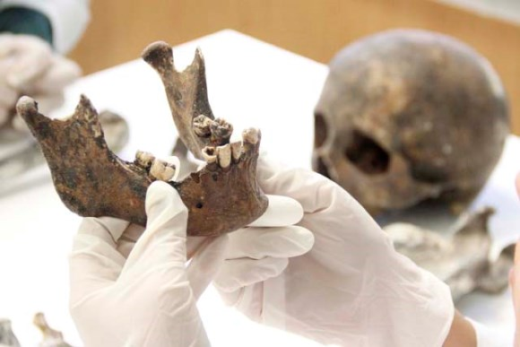

La Odontología Forense es la rama de la odontología que trata del manejo y examen adecuado de la evidencia dental; así como también de la valoración y de los hallazgos dentales que pueden tener interés por parte de la justicia.
La odontología forense estudia las características de las piezas y arreglos dentales, elabora moldes y fórmulas dentarias con objeto de identificar a personas descarnadas, putrefactas o quemadas. Es la aplicación de los conocimientos odontológicos como coadyuvante en la resolución de los problemas que plantea la Procuración y Administración de Justicia.
Además es la aplicación de los conocimientos odontológicos con fines de identificación y tiene utilidad en el derecho Laboral, Civil y Penal. La odontología forense es muy importante y abarca temas relevantes para las investigaciones judiciales tales como: dictámenes de edad, recolección de evidencia odontológica en delitos sexuales, maltrato infantil, responsabilidad profesional, entre otros.
La identificación de cadáveres se puede realizar mediante la realización del identoestomograma, es un documenta que incluye todas las características bucales como: patologías bucodentales, caries, restos radiculares, enfermedad periodontal, entre otras alteraciones. Los dientes son estructuras que resisten con el paso del tiempo tanto a ácidos, traumatismos o calor intenso. Así, pues estos se mantienen intactos con el paso del tiempo y pueden ser un reservorio de ADN en la pulpa del diente.
| Separación de mandíbula | Revisión de los premolares |
|  |  |